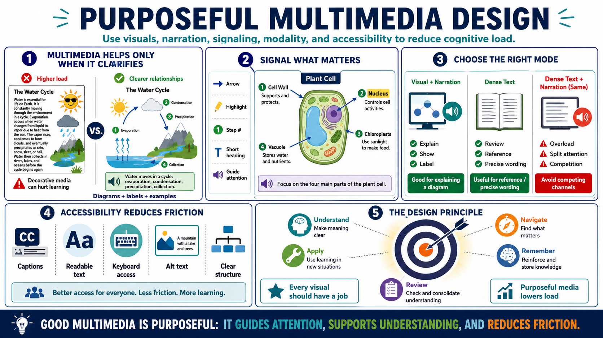

Multimedia, Modality, and Signaling
Connecting to LMS... Progress: in progress

Narration
Multimedia can reduce cognitive load when it helps learners understand relationships that words alone would make cumbersome. Diagrams, narration, visuals, labels, and examples can work together to make a process clearer. But multimedia is not automatically better. If images are decorative, animations are unnecessary, or narration competes with dense text, the design can increase load instead of reducing it.
Signaling means highlighting or cueing important information so learners know where to focus. A signal might be an arrow, a label, a highlight, a step number, a short heading, or a verbal cue. Signaling helps because learners do not always know which part of a diagram or explanation carries the main idea. Good signals guide attention without adding clutter.
Modality choices should be purposeful. Narration can pair well with visuals when the learner needs to inspect a diagram while hearing an explanation. Dense on-screen text may be better for reference or precise wording. The problem appears when the same dense text is read aloud while learners try to read it themselves. Designers should decide what each mode is doing: explaining, showing, labeling, summarizing, or supporting review.
Accessibility must be considered alongside load. Captions, readable text, keyboard navigation, meaningful alt text, and clear structure help learners access the material. Accessibility is not separate from learning quality; it often reduces unnecessary friction. The principle is to keep multimedia purposeful. Every visual, narration segment, animation, or label should help learners understand, navigate, remember, or apply the material.